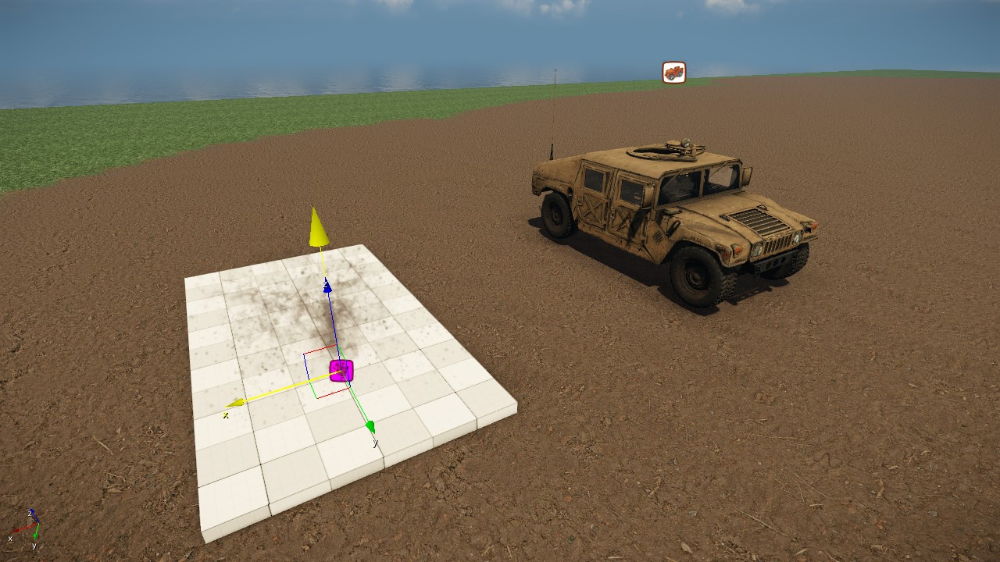
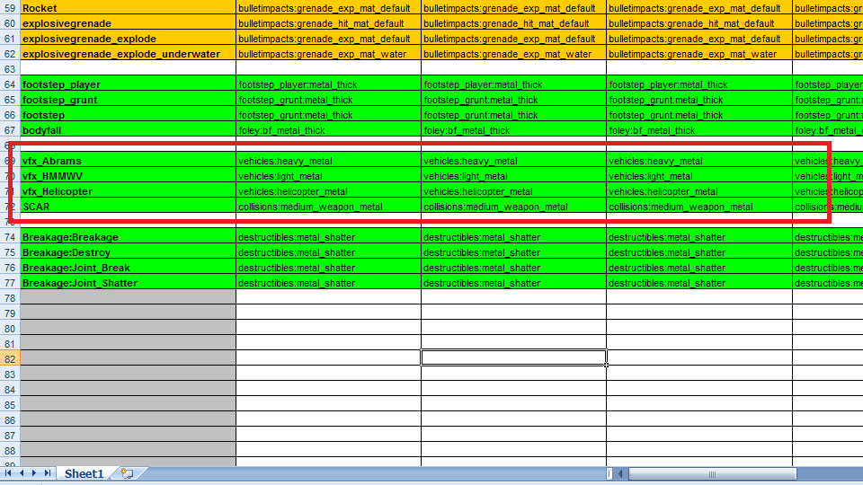
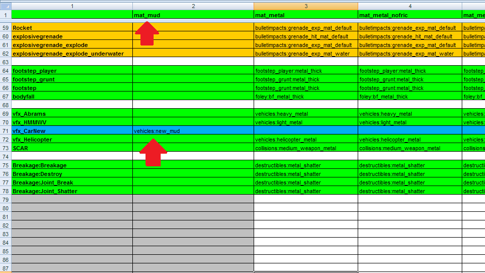
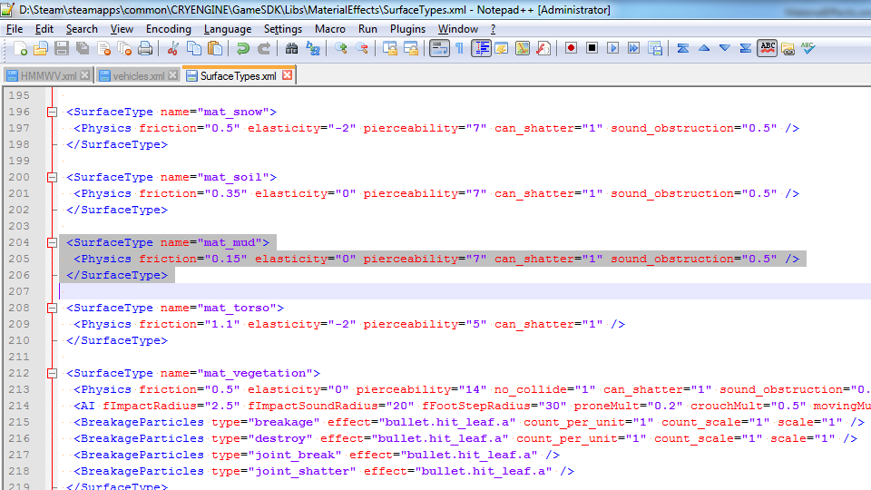
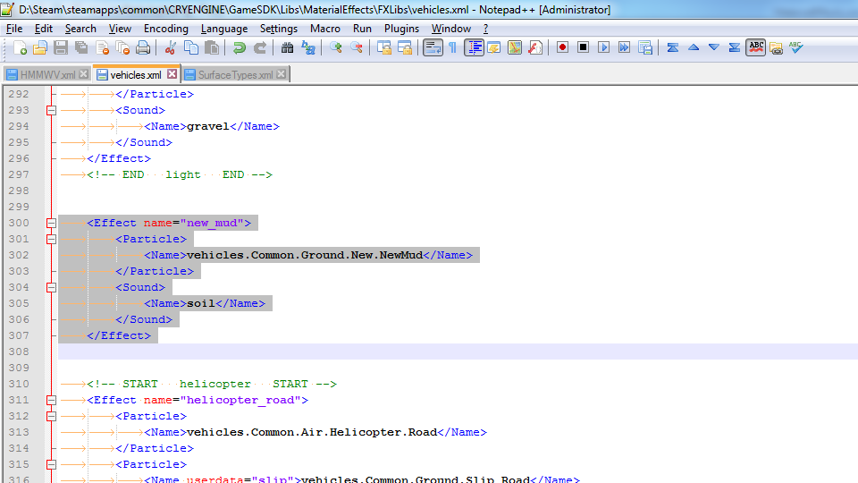
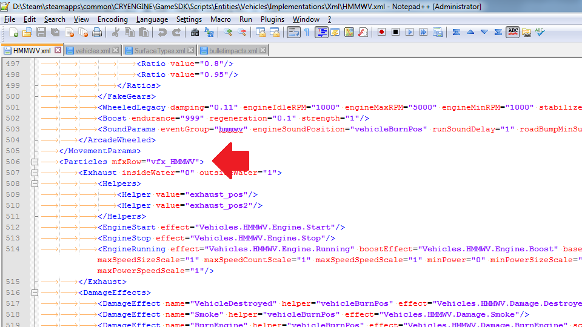
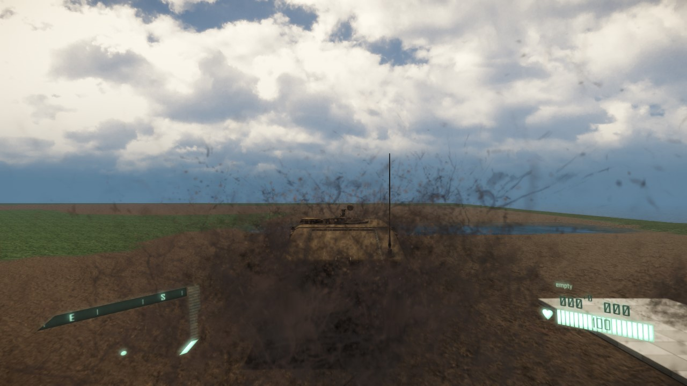
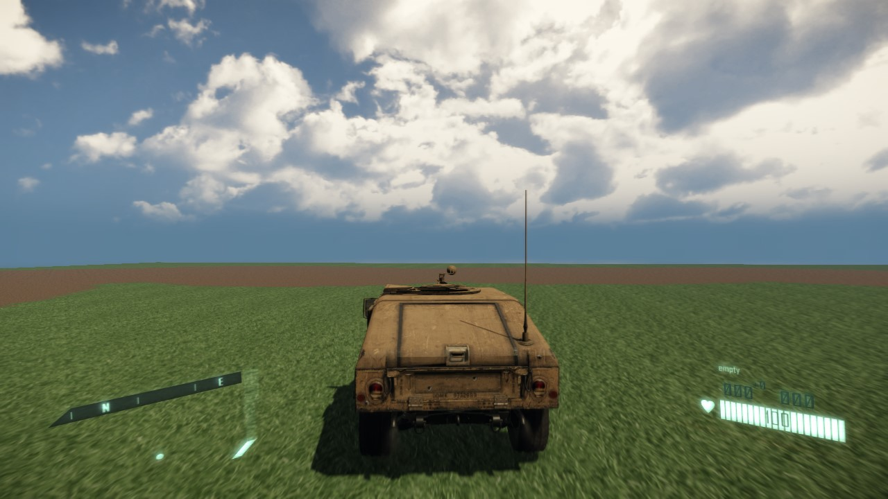
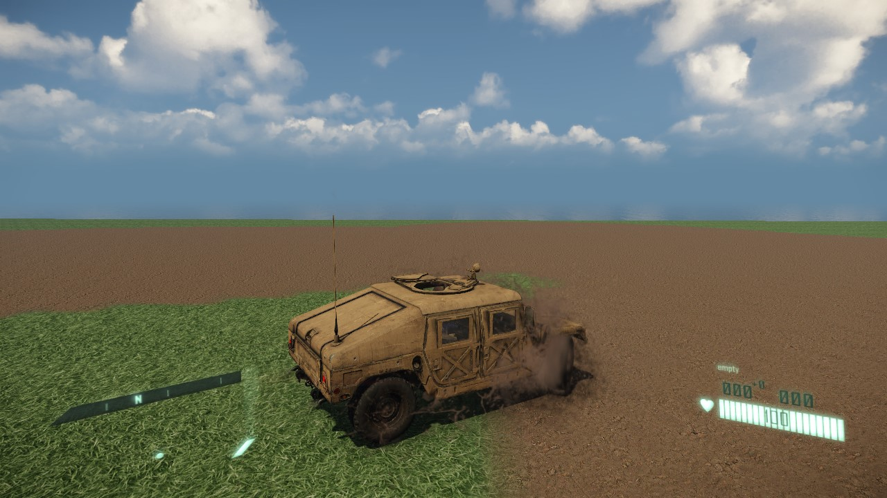
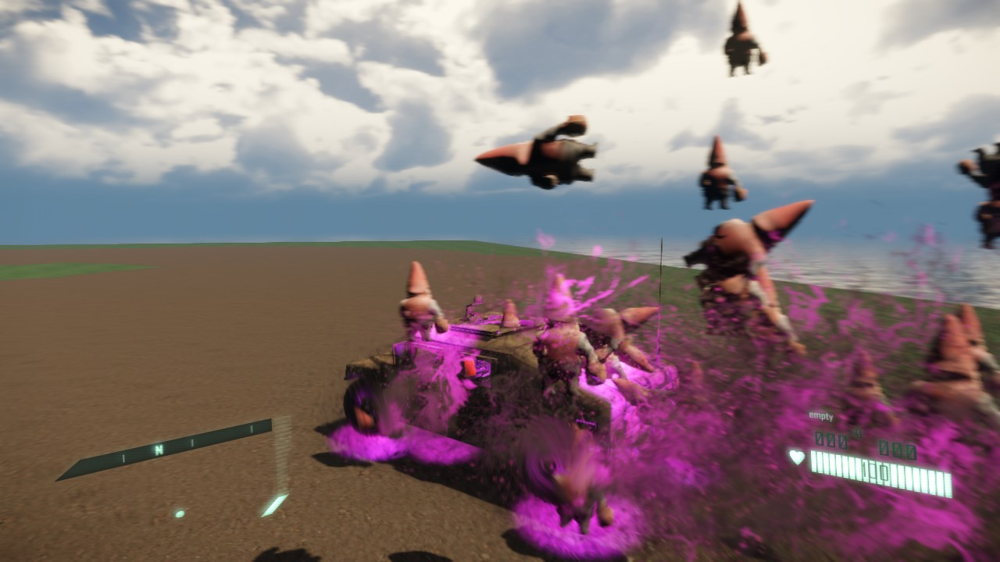

Обзор
В этом уроке вы узнаете, как создать и реализовать эффект материала «брызги грязи», который можно использовать с транспортными средствами.
Для этого мы собираемся создать новый эффект частиц (или «PFX») и тип поверхности, а также изменить скрипт транспортного средства.
Эффект частиц
Сначала давайте начнем с эффекта частиц, поскольку это будет основная часть наших изменений. Запустите редактор Sandbox, открыв новый уровень, на котором мы можем создать и протестировать эффект.
Поскольку это эффект транспортного средства (хотя он не обязательно должен ограничиваться этим), PFX будет создан внутри существующей библиотеки "транспортных средств" PFX.
Для начала давайте скопируем и изменим существующий транспортные средства.Общие.Земля.Свет.Грязь PFX и сохраните его под транспортные средства.Common.Ground.New.NewMud. Теперь это выглядит примерно так:

Хорошая идея — создать PFX на легко различимом фоне, например, объект Designer.
Материальные эффекты
Хорошо, теперь у нас есть новая частица, но как именно ее использует автомобиль? Как и большинство эффектов в игре, он работает через систему Material Effects.
Используя Excel, откройте файл, расположенный в: <GameFolder>\Libs\MaterialEffects\MaterialEffects.xml
Если пролистать немного вниз, то вы обнаружите следующий блок информации:

Не обращайте внимания на включение строки «SCAR» в этом руководстве.
Те из вас, кто знаком с SDK, вероятно, узнают некоторые из перечисленных здесь автомобилей со знакомым звучанием. В этом случае мы будем тесно сотрудничать с контентом HMMWV.
Вскоре мы объясним, как именно взаимодействуют все эти настройки, а пока создайте новую строку под (технически не имеет значения, где) vfx_HMMWV и назовите ее "vfx_CarNew".
Также добавьте новый столбец с именем mat_mud (обычно лучше организовывать их группами).

Итак, мы добавили сюда три новых основных элемента контента:
- Новая ссылка на тип поверхности под названием «mat_mud».
- Новая строка mfx под названием "vfx_CarNew".
- Новая ссылка на FXLib транспортных средств с "new_mud".
Типы поверхностей
Как упоминалось выше, мы создали новый ссылка к новому типу поверхности, но этот тип поверхности еще не существует, вы пока не можете назначить его ни одному материалу.
Чтобы создать новый тип поверхности, просто откройте файл: <GameFolder>\Libs\MaterialEffects\SurfaceTypes.xml
Добавьте новую запись следующим образом (скопировано mat_soil, но уменьшено значение трения, чтобы лучше имитировать грязь):
<SurfaceType name="mat_mud">
<Physics friction="0.15" elasticity="0" pierceability="7" can_shatter="1" sound_obstruction="0.5" />
</SurfaceType>
Теперь вы можете назначить тип поверхности «Грязь» в материале, по которому вы собираетесь ездить.
FXLibs
На данный момент простое добавление новых эффектов грязи может показаться излишним, но к концу вы, надеюсь, поймете и оцените огромную гибкость, которую предлагает эта система.
Не забывайте, что вы, конечно, всегда можете скопировать/вставить существующий контент, чтобы получить преимущество, и существующие настройки всегда можно расширить, вместо того, чтобы создавать совершенно новые настройки!
Теперь у нас есть настройка SurfaceType и наш материал ландшафта использует ее. У нас также есть установка MaterialEffect, но что это за запись "vehicles:new_mud", которую мы вообще сделали? Это была наша запись на FXLibs!
Откройте следующий файл: <GameFolder>\Libs\MaterialEffects\FXLibs\vehicles.xml
Здесь вы найдете некоторые знакомые по звучанию записи, которые вы, возможно, заметили в таблице MaterialEffects. В настоящее время он разделен на 3 раздела: тяжелый, легкий и вертолетный.
Мы собираемся создать новый раздел на основе последней записи в разделе «Свет»:
<Effect name="new_mud">
<Particle>
<Name>vehicles.Common.Ground.New.NewMud</Name>
</Particle>
<Sound>
<Name>soil</Name>
</Sound>
</Effect>
Здесь мы ссылаемся на эффект частиц, который хотим использовать, а также на звук, который он должен использовать (мы будем использовать существующую запись «Почва», поскольку она достаточно близка).
Обратите внимание, что мы можем, если захотим, ссылаться на несколько частиц, а также на декали. В том числе возможность масштабировать и рандомизировать используемые эффекты.
Скрипт автомобиля
На этом этапе нам осталось сделать последнее дело: выяснить, что делать с записью «vfx_CarNew», которую мы создали ранее.
Откройте скрипт автомобиля HMMWV здесь: <GameFolder>\Scripts\Entities\Vehicles\Implementations\Xml\HMMWV.xml
Прокрутите вниз и вы увидите блок «Частицы», который выглядит примерно так:

Теперь все начинает складываться воедино! Подведем итог цепочке событий, которые произойдут:
- В зависимости от типа поверхности HMMWV выполнит библиотеки FXLib, определенные в строке "vfx_HMMWV" внутри файла MaterialEffects.xml. Внутри файла FXLibs есть записи, охватывающие существующие типы поверхностей и эффекты, которые необходимо воспроизвести.
- Или HMMWV.xml -> SurfaceTypes.xml -> MaterialEffects.xml -> FXLibs/vehicles.xml -> Particles/vehicles.xml -> PFX.
Теперь давайте изменим скрипт HMMWV, чтобы проверить, работает ли наша установка. Измените mfxRow параметр, чтобы использовать нашу новую строку «vfx_CarNew».
Если вы еще этого не сделали, сейчас самое время перезапустить редактор, чтобы внести все наши изменения.
Если ваш тип поверхности не работает, попробуйте создать копию материала, установите тип поверхности на «Грязь», а затем примените этот материал к местности.
Тестирование
 |  |
| Новый эффект грязи | Для ряда vfx_NewCar нет настройки травы! |
|---|---|
 |  |
| Тестирование новых типов поверхностей | Система частиц связана только с вашим творчеством! |